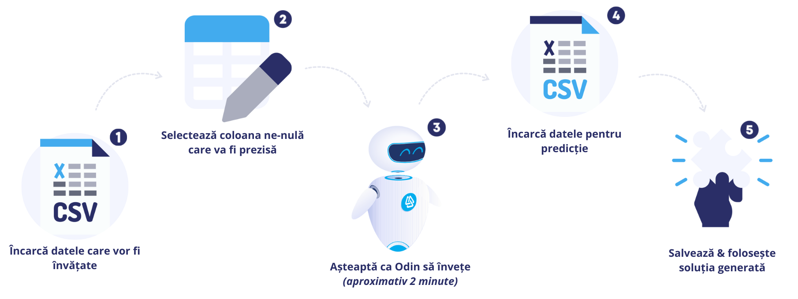

<ng-container *ngIf="!isSmallScreen"
  ><div class="spinner" mode="indeterminate" *ngIf="isFileNotLoadedCompletly()">
    <mat-spinner></mat-spinner>
  </div>

  <div class="learning-phase" [ngClass]="{ loading: isLoading }">
    <app-toolbar class="sticky"></app-toolbar>
    <div class="learning-container">
      <div class="title">{{ "learning-phase" | transloco }}</div>
      <app-upload-file
        (file)="getFile($event)"
        (csvContent)="getCsvContent($event)"
      ></app-upload-file>
      <div class="instructions" *ngIf="!isFileSelected()">
        
        
      </div>
      <ng-container *ngIf="isFileSelected()">
        <div class="content">
          <div class="begin-part">
            <app-generic-table
              class="table"
              [data]="data"
              [selectedColumn]="selectedColumn"
            ></app-generic-table>

            <mat-form-field class="form" appearance="fill">
              <mat-label class="label">{{
                "column-learning" | transloco
              }}</mat-label>
              <mat-select
                [(ngModel)]="selectedColumn"
                (change)="eventSelection($event)"
              >
                <mat-option
                  class="option"
                  [value]="column"
                  *ngFor="let column of columns"
                  >{{ column }}</mat-option
                >
              </mat-select>
            </mat-form-field>
          </div>

          <div class="end-part">
            <button
              class="button"
              (click)="startLearning()"
              [disabled]="isButtonDisabled()"
              [ngClass]="{ disabled: isButtonDisabled() }"
            >
              {{ "start-learning" | transloco }}
            </button>
            <mat-progress-bar
              mode="indeterminate"
              class="progress-bar"
              *ngIf="isLoading"
            ></mat-progress-bar>
          </div>
        </div>
      </ng-container>
    </div>
  </div>
</ng-container>
<ng-container *ngIf="isSmallScreen">
  <div class="learning">
    <app-toolbar class="sticky"></app-toolbar>

    <div class="learning-content">
      <div class="odin-image">
        
      </div>
      <div class="mobile-content">
        {{ "mobile-availability" | transloco }}
      </div>
    </div>
  </div>
</ng-container>
